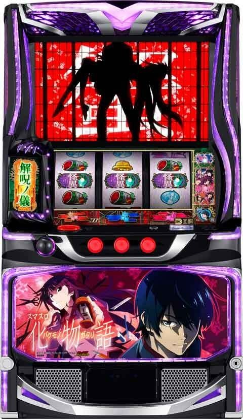
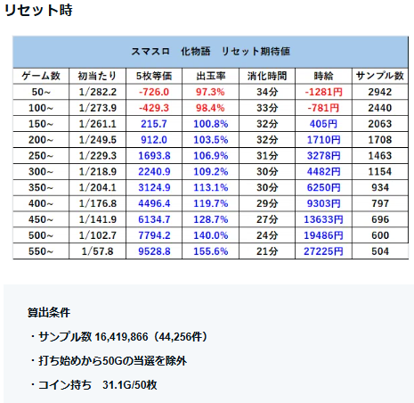
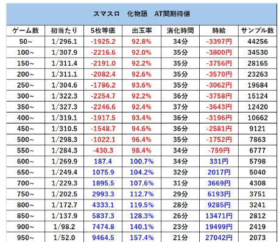
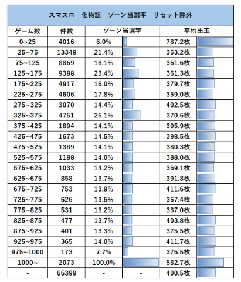
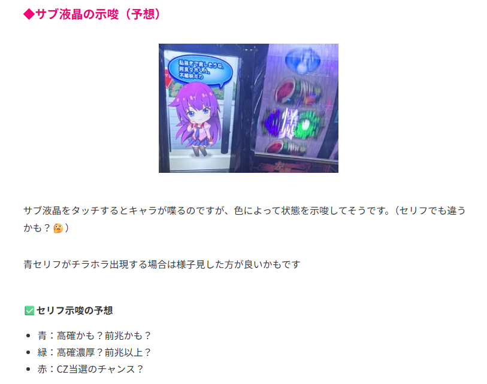
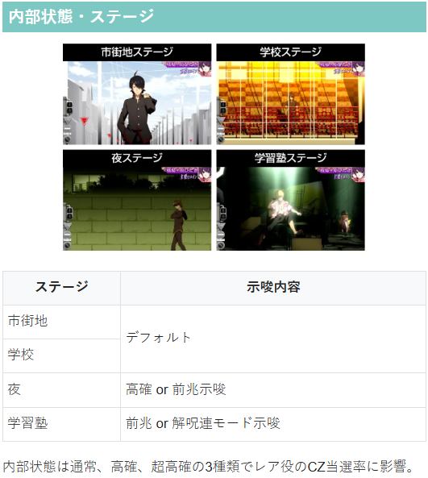
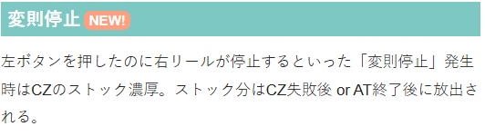
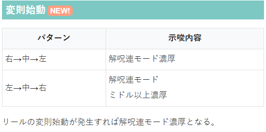
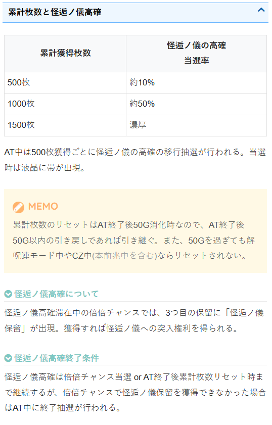

化物語

【天井情報】
AT間(夢の時間ヲ終わラセルな終了後)1000Gで天井到達となりAT＋倍倍チャンスに当選。
設定変更時は天井が600Gに短縮。
【リセット判別】
不明
【有利区間について】
不明
狙い目
期待値表は「あずくんnote」から引用
スマスロ化物語 大量実践値から見る 狙い目 やめどき リセット恩恵｜あず
【リセット狙い】

300Gから
【ゲーム数天井狙い】

700Gから
【ゾーン狙い】
AT後50G以内かつ夜or学習塾ステージ 50G前後またはステージ抜けるまで
※上記の条件かつ前回当選が100G前後までに当選していた方が解呪連の期待度が上がると思われる。
300Gゾーン 290Gから

※300G跨いだ後、毎回サブ液晶をタッチしセリフを確認しつつ10-15Gほど回して前兆が来なければやめ
※ゾーン当選時は310-312Gくらいでステチェン？1/4～1/5でサブ液晶青セリフ以上出る感じ？
【示唆関連の押し引きについて】
変則停止 CZストック濃厚。どのタイミングで出るか不明だがストック確認出来たらCZ出現まで。
変則始動 右→中→左、左→中→右の場合は解呪連濃厚。
サブ液晶タッチ時のボイス
AT終了後等の押し引きで使えるかも？10-20Gくらい毎回液晶をタッチして青以上のセリフが出なかったらやめるという感じ？

【有利区間関連狙い】
不明
やめ時
AT終了後、引き戻しゾーン「(超)夢の時間ヲ終わラセルな」を確認。
AT後は夜、学習塾ステージ抜けてかつ、示唆（サブ液晶セリフや変則始動など）が何も無ければやめ。
基本は20G程度でやめる感じ？
その他




参考元
基本情報
- メーカー: サミー
- 機械割: 97.9% 〜 112.1%
- 導入開始日: 2025年12月08日（月）
- ゲーム性概要: ●初代「パチスロ化物語」を再現＋進化させたスマスロ機 ●レア役やゲーム数消化で突入するCZ「解呪ノ儀」クリアでAT当選 ●AT「倖時間」は純増約2.7枚/G、初期枚数150枚の差枚数管理型 ●しのぶ倖時間中は保留が大幅優遇される「鬼倍倍チャンス」当選の大チャンス！ ●特定条件を満たすと突入する「怪逅の儀」クリアで上位ATへ ●上位AT「超倖時間」は純増約5.0枚/Gで倍倍チャンスの性能も強化！


打ち方
打ち方・小役
打ち方（小役狙い）
「最初に狙う絵柄」 左リール上段付近にBARを狙う。
「チェリー停止時」 中＆右リールに怪異を狙い、いずれかのリールに怪異停止で強チェリー。中＆右リール両方に怪異が止まると強チャンス目になる。
「スイカ停止時」 スイカが上段or中段までスベったら中リールに怪異を目安にスイカを狙う。右リールはフリー打ちでOKだ。
「レア役の停止例」
「狙え発生時」
怪異の停止位置の期待度序列
| 停止位置 | 序列 |
|---|---|
| 中のみ | 低 |
| 右＆中 | ↓ |
| 中＆左 | ↓ |
| 左のみ | ↓ |
| 3つ停止（怪異揃い） | 高 |
CZ中やAT中は怪異を狙えが発生。逆押しで全リールに怪異を狙い、停止個数や停止位置によって期待度が変化する。 右リール下段に怪異停止は怪異揃いの1確目だ。
変則押しはNG
通常時・押し順ナビなし時は左リール第1停止での消化を推奨する。
左リール青7狙い（小役狙い）
「最初に狙う絵柄」 左リールに青7を狙う楽しみ方もあり（チェリーはリプレイフラグなので取りこぼさない）。 枠内に2連青7が止まれば強レア役1確なので、第1停止にアツくなれる打ち方といえる。
「青7上段停止時」 強ベルB濃厚（下段揃い）。
「青7上＆中段停止時」 強チャンス目濃厚。
「青7中＆下段停止時」 強チェリーorチャンス目濃厚だが、どちらかの判別はできない。
「青7下段停止時」 ハズレorリプレイorベルor弱チェリーorチャンス目が成立。 中右リールはフリー打ちで成立役を判別可能だ。
「スイカ上段停止時」 スイカorチャンス目or強ベルA濃厚。 中リールにスイカを狙えば、右リールはフリー打ちでOKだ。
中段チェリー
中段チェリーの恩恵
AT＋倍倍チャンス＋怪逅ノ儀の権利獲得
解析情報通常時
小役関連
［設定差ナシ］小役確率
| 役 | 確率 |
|---|---|
| リプレイ | 1/7.6 |
| 弱チェリー | 1/131.1 |
| 強チェリー | 1/256.0 |
| チャンス目 | 1/96.4 |
| 強ベルA | 1/1489.5 |
| 強ベルB | 1/8192.0 |
| 強チャンス目 | 1/16384.0 |
| 中段チェリー | 1/191049.8 |
［設定差アリ］スイカ確率
スイカ確率は高設定ほど優遇される。
リールロックパターンごとの成立役
| パターン | 成立役 |
|---|---|
| ショート | レア役濃厚 |
| ロング | 強レア役濃厚 |
| ロングフリーズ | AT＋青7ボーナス |
| 超ロングフリーズ | 上位AT＋青7ボーナス＋倍倍チャンスストック3個 |
リールロックはレア役、ロングは強レア役成立濃厚だ。 リプレイの次ゲームでロングが発生すればロングフリーズ期待度約50%！
内部状態関連
内部状態概要
通常時の内部状態は通常＜高確＜超高確の3種類で、滞在状態によってレア役でのCZ当選率が変化。おもにレア役成立時に内部状態の昇格を抽選する。 夜ステージ滞在中は高確以上のチャンスだ。
内部状態移行率（設定1） 通常滞在時
| 役 | 高確へ | 超高確へ |
|---|---|---|
| （弱or強）チェリー・チャンス目 | 4.6% | 0.4% |
| スイカ | 43.3% | 6.7% |
| 強ベルA | 80.0% | 20.0% |
高確滞在時
| 役 | 高確へ | 超高確へ |
|---|---|---|
| （弱or強）チェリー・チャンス目 | 一 | 1.3% |
| スイカ | 一 | 25.0% |
高確中の強ベルAはCZ当選濃厚なので、内部状態の昇格は抽選しない。
モード
解呪連モード
解呪連モード中はレア役以外でも解呪ノ儀を抽選。ショート＜ミドル＜ロングの3種類があり、それぞれ継続率（解呪連モードからの転落率）が変化する。
解呪連モードへの移行率は、内部的に存在するLOWとHIGHの2種類の状態によって管理されている。
解呪連モード性能
| 移行契機 | 解呪ノ儀当選時、AT終了時、 解呪ノ儀本前兆中のレア役による抽選 |
|---|---|
| 種類 | ショート＜ミドル＜ロング |
| 備考 | LOW と HIGH の 2 種類の状態によって、 解呪連モード移行率が異なる |
解呪連モードごとの平均CZ当選回数
| 解呪連モード | 平均回数 |
|---|---|
| ショート | 約2回 |
| ミドル | 約4回 |
| ロング | 約10回 |
「リールの変則始動」
リールの始動パターンの示唆
| パターン | 示唆 |
|---|---|
| 全リール同時 | デフォルト |
| 右→中→左の順 | 解呪連モード滞在濃厚 |
| 左→中→右の順 | 解呪連モードミドルorロング滞在濃厚 |
全リールが同時に動きだすのがデフォルト。変則始動時は解呪連モード滞在濃厚となる。
解呪連モード移行率
解呪連モードへの移行に関わる状態
LOW＜HIGHの2種類
50G消化ごとにHIGHへの移行を抽選
HIGH当選時は50G間継続
51～100GはHIGH滞在濃厚
解呪連モード移行率
| 契機 | 移行率 |
|---|---|
| HIGH中のCZ当選 | 約50% |
| 強ベルB成立 | 濃厚 |
強ベルBは滞在状態不問で解呪連モードへ移行する。
「HIGHを示唆する演出」 第3停止時にキスショットの目のフラッシュバックが発生すればHIGH滞在を示唆。 基本的にはリプレイ成立時に発生するが、リプレイ以外で発生した場合はHIGH滞在濃厚だ。
解呪ノ儀（CZ）
解呪ノ儀概要
レア役・ゲーム数消化で突入するCZ。消化中はレア役や怪異停止でATを抽選していて、オーラの色が昇格するほど期待度がアップする。
解呪ノ儀性能
| 契機 | レア役or100G・200G・300G消化時の抽選 |
|---|---|
| 継続ゲーム数 | 15G＋ジャッジ演出 |
| 消化中の抽選 | レア役や怪異停止でATを抽選 |
| 成功期待度 | 約43% |
| 備考① | 選択ヒロインのCZなら成功期待度アップ |
| 備考② | CZ失敗時の一部で突入する解呪ノ儀EXは AT濃厚かつ倍倍チャンスストックの特化ゾーン |
| 備考③ | CZ成功時の一部で後日談EPボーナス突入 |
「ヒロイン」 エフェクトがアップするほど期待度も上昇していき、赤まで行けばAT期待度は83.5%。 CZは各ヒロインに対応した5種類で、選択ヒロインのCZが選ばれればチャンスとなる。CZ開始時にヒロインのマークが出現するので見た目での判別も簡単だ。
「怪異を狙え」 怪異が止まるほど期待度アップ！
「ジャッジ演出」 ラストのジャッジ演出成功でAT濃厚！
解呪ノ儀EX
CZ失敗時の一部で突入。AT当選濃厚かつ、消化中は成立役に応じて倍倍チャンスのストックが抽選される。
解呪ノ儀EX性能
| 契機 | CZ失敗時の一部 |
|---|---|
| 継続ゲーム数 | 15G |
| 消化中の抽選 | 成立役に応じた倍倍チャンスストック抽選 |
| 怪異orレア役 成立時の恩恵 | ストック1個以上濃厚 |
リプレイ成立時は怪異を狙えが発生する。
後日談EPボーナス
CZ成功後・AT準備中の×・？・？ナビ時に7が揃うと後日談EPボーナスに突入。ボーナス中はATの枚数上乗せ抽選がおこなわれる。当選率はリプレイ成立時の 約1% だ。
［超高確中］CZ当選率
| 設定 | スイカ | チャンス目 強チェリー | 強ベルA | 強ベルB |
|---|---|---|---|---|
| 1 | 100% | 100% | 100% | 100% |
| 2 | 100% | 100% | 100% | 100% |
| 3 | 100% | 100% | 100% | 100% |
| 4 | 100% | 100% | 100% | 100% |
| 5 | 100% | 100% | 100% | 100% |
| 6 | 100% | 100% | 100% | 100% |
小役での抽選のほかに、100G・200G・300G消化時もCZ抽選がおこなわれる。
「リールの変則停止発生時は即止め厳禁」 左停止ボタンを押したのに右リールが停止する変則停止が発生すれば、CZのストック獲得濃厚。獲得したストックはCZ失敗後orAT終了後に放出される。
選択ヒロイン振り分け
| ヒロイン | 振り分け |
|---|---|
| 選択ヒロイン以外 | 81.6% |
| 選択ヒロイン | 18.4% |
AT当選率
| 役 | 当選率 | |
|---|---|---|
| 弱チェリー | 5.0% | |
| スイカ | 12.5% | |
| 強チェリー・チャンス目 | 25.0% | |
| 強ベルA | 75.0% | |
| 強ベルB | 100% | |
| 強チャンス目 | 100% | |
| 怪異停止 | 中のみ | 5.0% |
| 怪異停止 | 中＆左 | 25.0% |
| 怪異停止 | 右＆中 | 20.0% |
| 怪異停止 | 左のみ | 30.0% |
| 怪異停止 | 怪異揃い | 100% |
選択ヒロイン時は「怪異：中のみ」停止時のAT当選率が10.0%にアップ。レア役・怪異停止以外でも2.9%で成功抽選がおこなわれるため期待度が高い。見た目上は非ヒロインだが内部的には選択ヒロインといったパターンもある。
「特殊出目」 連続演出の最終ゲームで特殊出目（中段に赤7・青7・赤7）が停止すれば、AT＋鬼倍倍チャンスが濃厚となる。
特殊出目の出現率
| 契機 | 出現率 |
|---|---|
| CZ成功時 | 0.4% |
［弱レア役での色アップ］ 弱チェリーやスイカでエフェクトが昇格するパターンは少ないが、昇格した場合はAT当選の期待大だ。
弱レア役で色昇格した場合のAT期待度
| 昇格パターン | 期待度 |
|---|---|
| 青→緑 | 約68% |
| 緑→赤 | 約97% |
AT当選後・倍倍チャンスストック当選率
| 役 | 当選率 |
|---|---|
| 弱チェリー | 0.4% |
| スイカ | 1.3% |
| チャンス目・強チェリー | 10.0% |
| 強ベルA | 25.0% |
| 強チャンス目 | 100% |
※AT準備中も同様の抽選値で倍倍チャンスストックを抽選
CZで内部的にATに当選した後のレア役では、倍倍チャンスのストックを抽選する。
怪異停止確率
| 怪異 | 確率 |
|---|---|
| 中のみ | 1/22.7 |
| 中＆左 | 1/25.2 |
| 右＆中 | 1/49.9 |
| 左のみ | 1/40.8 |
| 怪異揃い | 1/299.3 |
| 合算 | 1/7.6 |
CZ中はリプレイはすべて怪異絵柄に変換、スイカ以外のレア役は約3/4が怪異絵柄に変換される。
ゲーム数消化での抽選
ゲーム数消化・CZ当選率
今作では、レア役契機以外にゲーム数消化でもCZを抽選。 抽選は100G・200G・300G消化時におこなわれ、当選時はレア役契機と同様に前兆を経由してCZが告知される。
直撃抽選
弱チェリーのAT直撃当選率
通常時の弱チェリー成立時はAT直撃抽選がおこなわれる（当選時は倍倍チャンスも濃厚）。 当選率は高設定ほど高い。
フリーズ
ロングフリーズ
リールロック時の一部でロングフリーズが発生。通常時だけでなく、AT中も発生する可能性がある。 初代同様、リプレイの次ゲームでリールロックが発生すればフリーズのチャンス!?
ロングフリーズ性能
| 契機 | リールロック発生時の一部 |
|---|---|
| 恩恵 | 青7ボーナス＋AT |
| 確率 | 1/17723.9 |
超ロングフリーズ
ロングフリーズ中に画面がクラッシュすると超ロングフリーズ。 専用のボーナス（超倖ボーナス）を経由して上位ATへ直行＋上位倍倍チャンスのストックを3個獲得する。
超ロングフリーズ性能
| 契機 | ロングフリーズ時の約3% |
|---|---|
| 恩恵 | ボーナス＋上位AT＋倍倍チャンス3個 |
| 確率 | 1/506029.5 |
ロングフリーズのメイン契機はリプレイ。かなり低確率だが、リプレイ以外でもフリーズの可能性があるのでリプレイの次ゲーム以外でリールロックが発生してもロングフリーズを否定するわけではない。
ロングフリーズ動画
通常時・AT中共通で、リールロックの一部でロングフリーズが発生。リプレイの次ゲームでリールロックが発生すればフリーズのチャンスだ。
解析情報ボーナス時
倖時間（AT）
AT概要
差枚数管理型のAT。レア役や怪異停止で突入する倍倍チャンスやボーナスで枚数を上乗せしながら、ロング継続を目指す初代同様のゲーム性だ。 規定枚数獲得など、特定の条件を満たすと突入する怪逅ノ儀に成功すると、上位ATへ昇格する。
倖時間性能
| 契機 | CZ成功、直撃抽選 |
|---|---|
| 初期枚数 | 150枚 |
| 1Gあたりの純増 | 約2.7枚 |
| 消化中の抽選 | レア役・怪異停止でボーナスや倍倍チャンスを抽選、 弱チェリーの一部でしのぶ倖時間へ |
| AT終了後 | 夢の時間ヲ終わラセルなへ |
［倖連結（ハッピーリンク）］
払い出し枚数の分だけサブ液晶のマスを進んでいき、規定の枚数を払い出すごとに狙えが発生（擬似遊技）。倖連結経由の狙え時は最低1つは怪異が停止する。 規定枚数到達時の マスの色が赤なら怪異の中1個停止を否定 。規定の払い出し枚数はAT初回は最大150枚で、2回目以降は最大300枚となる。
AT中ステージの序列
| ステージ | 序列 |
|---|---|
| 並 | 低 |
| 萌 | ↓ |
| 蕩 | 高 |
初期内部状態振り分け
| CZ突入時の内部状態 | 並 | 萌 | 蕩 |
|---|---|---|---|
| 通常 | 90.0% | 9.6% | 0.4% |
| 高確 | 66.7% | 32.5% | 0.8% |
| 超高確 | ー | 75.0% | 25.0% |
CZに当選した時の内部状態を参照して、AT開始時の内部状態を抽選。 内部的に蕩の場合でも、見た目上は並からスタートする。
ステージ昇格契機
| 契機 | 押し順 12 枚ベル・スイカ・強ベル A での抽選 |
|---|---|
| ゲーム数表示発光 | ステージがアップしやすい状態 （モードアップ高確） |
おもにレア役で内部状態の昇格を抽選。上位の状態ほど怪異の停止期待度や倍倍チャンス当選期待度がアップする。
モードアップ高確
| 50G消化ごと移行率 | 16.6% |
|---|---|
| 継続ゲーム数 | 20G |
※AT開始時もモードアップ高確移行抽選あり
ATを50G消化するごとに、モードアップ高確への移行を抽選（当選時はゲーム数表示部分が発光）。 滞在ステージが「萌」かつモードアップ高確中の場合、スイカ成立時の約50%で「蕩」へ昇格する。
［並］
［萌］
［蕩］
怪逅ノ儀高確
AT中に怪逅ノ儀高確率の帯が表示されると怪逅ノ儀高確状態となり、次の倍倍チャンス中に怪逅ノ儀保留が出現。 怪逅ノ儀高確は、500枚獲得ごとに移行抽選がおこなわれる。
怪逅ノ儀高確移行率
| 獲得枚数 | 移行率 |
|---|---|
| 500枚 | 約10% |
| 1000枚 | 約50% |
| 1500枚 | 100% |
怪逅ノ儀高確の終了契機
倍倍チャンス当選後、AT中におこなわれる終了抽選に当選
獲得枚数がクリアされた時
怪逅ノ儀高確は倍倍チャンスに当選するまで継続。 倍倍チャンスで怪逅ノ儀保留を取れなかった場合、終了抽選に当選するまで怪逅ノ儀高確が継続する。
「獲得枚数の引き継ぎ」
獲得枚数のクリアタイミング
通常時50G消化 ※解呪連モード中やCZ中・CZ本前兆中はクリアされない
解呪連モードが継続している間はゲーム数不問で獲得枚数は引き継ぎ、AT終了後50G以内のAT当選であれば、解呪連モード不問で獲得枚数が引き継がれる。
倍倍チャンスorボーナス当選率 並滞在時
| 役 | 当選率 | |
|---|---|---|
| 弱チェリー | 0.4% | |
| スイカ | 0.4% | |
| 強チェリー・チャンス目 | 20.0% | |
| 強ベルA | 50.0% | |
| 強ベルB | 100% | |
| 強チャンス目 | 100% | |
| 怪異停止 | 中のみ | 5.0% |
| 怪異停止 | 中＆左 | 25.0% |
| 怪異停止 | 右＆中 | 20.0% |
| 怪異停止 | 左のみ | 30.0% |
| 怪異停止 | 怪異揃い | 100% |
萌滞在時
| 役 | 当選率 | |
|---|---|---|
| 弱チェリー | 1.3% | |
| スイカ | 1.3% | |
| 強チェリー・チャンス目 | 33.0% | |
| 強ベルA | 50.0% | |
| 強ベルB | 100% | |
| 強チャンス目 | 100% | |
| 怪異停止 | 中のみ | 5.0% |
| 怪異停止 | 中＆左 | 25.0% |
| 怪異停止 | 右＆中 | 20.0% |
| 怪異停止 | 左のみ | 30.0% |
| 怪異停止 | 怪異揃い | 100% |
蕩滞在時
| 役 | 当選率 | |
|---|---|---|
| 弱チェリー | 20.0% | |
| スイカ | 100% | |
| 強チェリー・チャンス目 | 75.0% | |
| 強ベルA | 100% | |
| 強ベルB | 100% | |
| 強チャンス目 | 100% | |
| 怪異停止 | 中のみ | 40.0% |
| 怪異停止 | 中＆左 | 75.0% |
| 怪異停止 | 右＆中 | 75.0% |
| 怪異停止 | 左のみ | 75.0% |
| 怪異停止 | 怪異揃い | 100% |
強チャンス目は滞在状態不問でボーナス濃厚。ステージと内部的な滞在状態は完全リンクではない。
倖連結の怪異停止個数振り分け 通常の倖連結
| 怪異 | 並 | 萌 | 蕩 | しのぶ | 倍倍 |
|---|---|---|---|---|---|
| 中のみ | 80.8% | 67.5% | 20.8% | 45.0% | 70.0% |
| 中＆左 | 6.3% | 10.0% | 20.8% | 15.0% | 8.3% |
| 右＆中 | 8.3% | 12.5% | 20.8% | 15.0% | 8.3% |
| 左のみ | 4.2% | 7.5% | 20.8% | 15.0% | 8.3% |
| 怪異揃い | 0.4% | 2.5% | 16.7% | 10.0% | 5.0% |
| ボーナス直撃 | 0.05% | 0.05% | 0.05% | ー | ー |
赤マスの倖連結
| 怪異 | 並 | 萌 | 蕩 | しのぶ | 倍倍 |
|---|---|---|---|---|---|
| 中のみ | ー | ー | ー | ー | ー |
| 中＆左 | 22.5% | 22.5% | 12.5% | 12.5% | ー |
| 右＆中 | 25.0% | 25.0% | 12.5% | 12.5% | 50.0% |
| 左のみ | 20.0% | 20.0% | 12.5% | 12.5% | ー |
| 怪異揃い | 32.5% | 32.5% | 62.5% | 62.5% | 50.0% |
| ボーナス直撃 | 0.05% | 0.05% | 0.05% | ー | ー |
※倍倍…倍倍チャンス、状態は見た目ではなく内部的な滞在状態 ※ボーナス直撃時は擬似遊技で直接赤7が揃う
倍倍チャンス
倍倍チャンス概要
成立役に応じて保留の獲得抽選をおこない、最終的な配当×倍率の枚数を上乗せ。レア役や怪異は保留獲得濃厚かつ、エクストラサービスや超倍倍チャンス当選の可能性もある。
倍倍チャンス性能
| 契機 | AT中のレア役など |
|---|---|
| 継続ゲーム数 | 萌エ尽キ注意でハズレ目を引くまで |
| 消化中の抽選 | 成立役に応じた保留の獲得抽選、 超倍倍チャンスや（超）エクストラサービス抽選 |
保留獲得期待度
| 役 | 通常AT | 上位AT |
|---|---|---|
| 3枚ベル | 30.7% | 6.6% |
| リプレイ | 47.5% | 47.5% |
| 12枚ベル（中or下段） | 50.0% | 50.0% |
| レア役・怪異停止 | 濃厚 | 濃厚 |
「保留」
保留の種類と獲得時の効果
| 保留 | 効果 |
|---|---|
| 倍率 | 2～10倍を獲得 |
| 阿良々木 | 倍率変換・配当変換・ 保留変換・特殊変換 |
| ヒロイン | 配当変換・保留変換・特殊変換の期待度アップ |
| 忍 | 特殊変換濃厚 |
| 超倍倍 | 超倍倍チャンスへ |
| 怪逅 | 怪逅ノ儀の権利獲得（突入はAT終了時） |
| （超）EX | （超）エクストラサービス突入 ※極倍倍チャンス中専用保留 |
※特殊変換…倍率＆配当変換、配当＆保留変換、倍率＆保留変換、倍率＆配当＆保留変換、保留をすべてしのぶに変換のいずれか
キャラ保留獲得時の恩恵一覧
配当加算（配当がアップ）
倍率2倍（獲得済みの倍率が2倍）
保留変化（表示されている保留が昇格） ※倍率→倍率アップ、阿良々木→ヒロインor忍、ヒロイン→忍
配当加算＆倍率2倍
配当加算＆保留変化
倍率2倍＆保留変化
配当加算＆倍率2倍＆保留変化
オール忍保留変換（表示されている保留がすべて忍に変化）
※ キャラ保留 … 阿良々木・ヒロイン・忍保留
液晶右側に3G先までの保留を表示。保留は1Gごとにスライドしていくので、高倍率の保留やキャラ保留を獲得できるかが重要だ。 今作では、獲得すれば超倍倍チャンスとなる保留も追加。怪逅保留獲得時は怪逅ノ儀の権利を獲得できる。
「エクストラサービス」 0G連が続く限り連続で倍率を上乗せ！
エクストラサービス性能
| 契機 | 保留獲得時の一部 |
|---|---|
| 保留獲得時の役 | 怪異揃い：100%、 レア役：チャンス、強レア役：50% |
| ループ率 | 50%・66%・80%・89% （上乗せ2回の保障あり） |
「超エクストラサービス」 倍率ではなく、配当の枚数を0G連で上乗せしていく。 上位AT中の倍倍チャンスは、開始時からエクストラサービスや超エクストラサービスに突入する。
「萌エ尽キ注意は終了のピンチ」 倍倍チャンス終了時は萌エ尽キ注意演出が発生。ここでハズレ目を引くと終了、リプレイなら継続濃厚となる。終了とみせかけて逆転するパターンもあり。
超倍倍チャンス概要
おもに倍倍チャンス中のレア役・怪異停止を契機に突入。滞在中は倍率の獲得期待度大幅アップかつ、全役で配当の加算が抽選される。
超倍倍チャンス性能
| 契機 | 倍倍チャンス中の抽選、超倍倍チャンス保留獲得時、 倍倍チャンス開始時の一部 |
|---|---|
| 継続ゲーム数 | 5G＋α（6G目以降の継続率は66.7%） |
| 恩恵 | 倍率の獲得期待度大幅アップ＆全役で配当加算を抽選 （保留獲得時の57.9%で配当を加算） |
| 備考 | 倍倍チャンスに戻った際は、 倍倍チャンスの保障5Gを再セット |
鬼倍倍チャンス概要
出現する保留が優遇された上位版の倍倍チャンス。倍率は5倍以上が出やすく、キャラ保留の出現率もアップしている。
鬼倍倍チャンス性能
| 契機 | しのぶ倖時間中の倍倍チャンス当選、 特殊出目停止時、超倖時間中の一部 |
|---|---|
| 継続ゲーム数 | 萌エ尽キ注意でハズレ目を引くまで |
| 消化中の抽選 | 成立役に応じた保留の獲得抽選、 超倍倍チャンスや（超）エクストラサービス抽選 |
| 備考 | 通常の倍倍チャンスに比べて5倍以上が出やすく、 キャラ保留の出現率も高い |
極倍倍チャンス概要
上位AT中に突入する可能性のある最強の倍倍チャンス。保留を獲得するたびに（超）エクストラサービスが発動するので、大量上乗せの期待度が高い。
極倍倍チャンス性能
| 契機 | 超倖時間中の一部 |
|---|---|
| 継続ゲーム数 | 萌エ尽キ注意でハズレ目を引くまで |
| 消化中の抽選 | 成立役に応じた保留の獲得抽選 |
| 備考 | 保留を獲得するごとに、 （超）エクストラサービス発動濃厚 |
倍倍チャンス1G目の成立役別・初期配当
| 役 | 配当 |
|---|---|
| 弱チェリー・スイカ | 10枚以上 |
| 強チェリー・チャンス目 | 約25%で20枚 |
| 強ベルA | 約50%で20枚 |
| 強ベルB・強チャンス目・怪異揃い | 20枚濃厚 |
1G目に引いた成立役に応じて初期配当が抽選される。
テーブルの特徴（一部）
| テーブル | 特徴 |
|---|---|
| 通常テーブル | 基本のテーブル |
| ヒロインテーブル | 倍率は偶数倍率のみが出現、 キャラ保留はヒロインor忍が出現 |
倍倍チャンス中の保留の出現率は複数のテーブルで管理されている。 ヒロインテーブルで出現する倍率保留は偶数倍率のみ。出てくる保留が2倍や4倍ばかりなら、ヒロインテーブル滞在の期待度がアップ。 阿良々木保留はヒロインテーブル時では出現しない。
キャラ保留獲得時の恩恵振り分け
| 恩恵 | 暦保留 | ヒロイン 保留 | 忍保留 |
|---|---|---|---|
| 配当加算 | 95.0% | 52.9% | ー |
| 保留変換 | 1.3% | 23.8% | ー |
| 累計倍率2倍 | 1.7% | 10.8% | ー |
| 配当加算＆保留変換 | 0.4% | 3.8% | 28.3% |
| 累計倍率2倍＆保留変換 | 0.4% | 3.8% | 28.3% |
| 配当加算＆累計倍率2倍 | 0.4% | 2.1% | 28.3% |
| 配当加算＆累計倍率2倍＆保留変換 | 0.4% | 2.1% | 10.0% |
| オール忍保留変換 | 0.4% | 0.8% | 5.0% |
配当加算時の加算枚数振り分け
| 枚数 | 振り分け |
|---|---|
| ＋1枚 | 90.0% |
| ＋2枚 | 8.8% |
| ＋3枚 | 1.3% |
（超）エクストラサービス当選率
| 役 | 当選率 | |
|---|---|---|
| 弱チェリー | 0.4% | |
| スイカ | 0.4% | |
| 強チェリー・チャンス目 | 50.0% | |
| 強ベルA | 75.0% | |
| 強ベルB | 100% | |
| 強チャンス目 | 100% | |
| 怪異停止 | 中のみ | 2.5% |
| 怪異停止 | 中＆左 | 25.0% |
| 怪異停止 | 右＆中 | 20.0% |
| 怪異停止 | 左のみ | 30.0% |
| 怪異停止 | 怪異揃い | 100% |
強チャンス目はエクストラサービス濃厚で、1/2で超エクストラサービスに当選する。
（超）エクストラサービスの継続率振り分け
| 継続率 | 弱チェリー | スイカ | 強チェリー チャンス目 | 強ベルA | ||
|---|---|---|---|---|---|---|
| 50% | ー | ー | 66.7% | 66.7% | ||
| 66% | 90.0% | 90.0% | 28.3% | 28.3% | ||
| 80% | 9.6% | 9.6% | 4.6% | 4.6% | ||
| 89% | 0.4% | 0.4% | 0.4% | 0.4% | ||
| 継続率 | 強ベルB | 強チャンス目 | 怪異中のみ | 怪異中＆左 | ||
| 50% | ー | ー | ー | 66.7% | ||
| 66% | ー | ー | 90.0% | 28.3% | ||
| 80% | 75.0% | ー | 9.6% | 4.6% | ||
| 89% | 25.0% | 100% | 0.4% | 0.4% | ||
| 継続率 | 怪異右＆中 | 怪異左のみ | 怪異揃い | |||
| 50% | 66.7% | 66.7% | ー | |||
| 66% | 28.3% | 28.3% | 75.0% | |||
| 80% | 4.6% | 4.6% | 12.5% | |||
| 89% | 0.4% | 0.4% | 12.5% |
（超）エクストラサービス抽選のポイント
レア役・怪異停止時に抽選
弱チェリー・スイカ・怪異：中のみで当選すれば継続率50%を否定
怪異揃いは継続率50%を否定、1/4%で継続率80%以上
強ベルBで当選時は継続率80%以上、強チャンス目なら継続率89%濃厚
超エクストラサービス当選時の振り分けも共通
倍倍チャンス中・超倍倍チャンス当選率（一部）
| 役 | 当選率 |
|---|---|
| スイカ | 0.4% |
| 怪異揃い | 8.3% |
しのぶ倖時間
しのぶ倖時間概要
AT中の弱チェリーの一部で突入するCZ的なステージ。10G間、倍倍チャンスの当選率がアップかつ、当選した倍倍チャンスは鬼倍倍チャンス濃厚となる。
［初回］弱チェリー回数別・しのぶ倖時間当選率
| チェリー回数 | 当選率 |
|---|---|
| 3回 | 20.0% |
| 5回 | 20.0% |
| 7回 | 20.0% |
| 10回 | 100% |
弱チェリーが3・5・7回成立するごとにしのぶ倖時間への移行を抽選していて、10回成立で必ず移行。 一度しのぶ倖時間に当選した後は、弱チェリーの成立回数ではなく、弱チェリーが成立するたびに移行抽選がおこなわれる。
ボーナス
ボーナス概要
30G継続の擬似ボーナスで、消化中は全役でATの枚数上乗せを抽選。赤7揃いよりも青7揃いの方が上乗せ性能が高い。
ボーナス性能
| 契機 | AT中のレア役での抽選 |
|---|---|
| 継続ゲーム数 | 30G |
| 消化中の抽選 | 成立役に応じたATの枚数上乗せ抽選、 怪異停止（リプレイ成立）ごとに30枚以上を上乗せ |
| 備考 | 赤7よりも青7の方が上乗せ性能が高い |
ボーナス確率
※ロングフリーズ・後日談ボーナスを除く
怪逅ノ儀（上位CZ）
怪逅ノ儀概要
エンディング到達など、特定の条件を満たすと突入する上位ATをかけたCZ。成功期待度は約50%で、失敗しても通常のATへ突入する。
怪逅ノ儀性能
| 契機 | エンディング後、中段チェリー停止時、 倍倍チャンスで怪逅保留獲得時など |
|---|---|
| 継続ゲーム数 | 10G＋α |
| 成功期待度 | 約50% |
| 消化中の抽選 | 成立役に応じた上位AT抽選 |
| 成功時の恩恵 | 上位AT＋超or鬼or極倍倍チャンス獲得 |
「狙え発生でチャンス」
怪異停止、レア役成立時は成功のチャンスとなる（怪異停止・レア役以外も成功抽選あり）。
怪異停止時の上位AT当選率
| 役 | 当選率 | |
|---|---|---|
| 怪異停止 | 中のみ | 5.0% |
| 怪異停止 | 中＆左 | 22.6% |
| 怪異停止 | 右＆中 | 19.7% |
| 怪異停止 | 左のみ | 50.0% |
| 怪異停止 | 怪異揃い | 100% |
怪異揃いなら極倍倍チャンススタートだ。
成立役ごとの上位AT当選率
| 役 | 当選率 |
|---|---|
| ハズレ・ベル | 0.8% |
| 弱チェリー | 5.0% |
| スイカ | 12.5% |
| チャンス目・強チェリー | 33.3% |
| 強ベルAorB | 100% |
| 強チャンス目 | 100% |
弱チェリー・チャンス目・強チェリーは基本的に怪異を狙えに変換。チャンス目と強チェリーが変換されずに停止した場合は上位AT当選濃厚になる。
上位CZ準備中も上記抽選値で上位AT抽選がおこなわれていて、当選時は上位CZの1G目に告知が発生。ハズレやベルで当選した場合、左停止ボタンを押したのに右リールが止まる変則停止での告知が発生しやすい。
超倖時間（上位AT）
上位AT概要
基本的なゲーム性は倖時間と同様だが、純増が約5.0枚に増加。 さらに、倍倍チャンス当選率が約2倍にアップかつ、当選する倍倍チャンスはすべて上位版となるなど、上乗せ性能も強化されている。
超倖時間性能
| 契機 | 怪逅ノ儀成功時 |
|---|---|
| 初期枚数 | 150枚＋上位倍倍チャンスでの上乗せ分 |
| 1Gあたりの純増 | 約5.0枚 |
| 消化中の抽選 | レア役・怪異停止でボーナスや倍倍チャンスを抽選 |
| 備考 | 倍倍チャンス当選率が約2倍にアップ、 当選する倍倍チャンスは上位版のみ!? |
実戦上、上位AT終了後は特に恩恵はなさそう。 ただし、内部状態や解呪連モード移行関連で、抽選が優遇されている可能性はある。
上位AT中の倍倍チャンス
開始時から（超）エクストラサービスが発動
超倍倍チャンス
鬼倍倍チャンス
極倍倍チャンス
（超）夢の時間ヲ終わラセルな
夢の時間ヲ終わラセルな概要
AT終了後は必ず引き戻しゾーンへ突入。3G以内にレア役を引けば引き戻しが濃厚となる。 上位AT終了後に突入する超夢の時間ヲ終わラセルなは、成功すれば上位AT＋倍倍チャンス濃厚だ。
夢の時間ヲ終わラセルな性能
| 契機 | （上位）AT終了時 |
|---|---|
| 継続ゲーム数 | 3G |
| 消化中の抽選 | レア役成立で（上位）ATを引き戻し |
演出情報
通常時
ステージの示唆
| ステージ | 示唆 |
|---|---|
| 市街地 | デフォルト |
| 学校 | デフォルト |
| 夜 | 高確or前兆示唆 |
| 学習塾 | 前兆＆解呪連モード示唆 |
［市街地］
［学校］
［夜］
［学習塾］
解呪ノ儀（CZ）
回想発生時の成功期待度
| 1G目・2G目 | 今作の期待度 | 初代の期待度 |
|---|---|---|
| あり ・なし | 63.3% | 約52% |
| なし・ あり | 87.4% | 約78% |
| あり ・ あり | 99.7% | 約95% |
前作に比べて、回想演出の期待度がアップしている。
［回想］ 回想発生でチャンス。2回発生なら成功はもう目前！
［ひたぎ］チャンスアップごとの期待度
| ゲーム数 | パターン | 期待度 |
|---|---|---|
| 1G目 | 第1停止時：白背景 | 67.9% |
| 1G目 | 第3停止時：忍野のカット | 68.6% |
| 1G目 | 上記が両方発生 | 濃厚 |
| 2G目 | 第3停止時：阿良々木のカット | 61.2% |
| 2G目 | 第3停止時：忍野のカット | 88.6% |
| 2G目 | レバーON時：白背景 第3停止時：阿良々木のカット | 80.3% |
| 2G目 | レバーON時：白背景 第3停止時：忍野のカット | 濃厚 |
| 3G目 | レバーON時：白背景 | 86.0% |
| 3G目 | PUSHボタン出現 | 96.0% |
| 3G目 | 上記が両方発生 | 濃厚 |
［白背景］
［忍野のカット］ 阿良々木と忍野では、忍野が出現したほうがアツい。
［まよい］チャンスアップごとの期待度
| ゲーム数 | パターン | 期待度 |
|---|---|---|
| 1G目 | 第3停止時：道路の文字がオレンジ | 66.1% |
| 1G目 | 第3停止時：道路の文字が赤 | 濃厚 |
| 2G目 | 第3停止時：笑顔 | 68.5% |
| 2G目 | レバーON時：ひたぎ登場 第3停止時：笑顔 | 71.4% |
| 3G目 | レバーON時：好機 | 86.0% |
| 3G目 | PUSHボタン出現 | 96.0% |
| 3G目 | 上記が両方発生 | 濃厚 |
［道路の文字が赤］
［笑顔］ レバーON時にひたぎが登場しているとさらにチャンス。
［するが］チャンスアップごとの期待度
| ゲーム数 | パターン | 期待度 |
|---|---|---|
| 1G目 | 第1停止時：赤背景 | 94.6% |
| 1G目 | 第3停止時：パンチをかわす | 67.7% |
| 1G目 | 上記が両方発生 | 濃厚 |
| 2G目 | レバーON時：赤背景 | 96.4% |
| 2G目 | 第3停止時：パンチをかわす | 71.3% |
| 2G目 | 上記が両方発生 | 濃厚 |
| 3G目 | レバーON時：こよみ突っ込む（赤） | 86.0% |
| 3G目 | PUSHボタン出現 | 96.0% |
| 3G目 | 上記が両方発生 | 濃厚 |
［パンチをかわす］
［PUSHボタン出現］
［なでこ］チャンスアップごとの期待度
| ゲーム数 | パターン | 期待度 |
|---|---|---|
| 1G目 | 第3停止時：白背景 | 69.4% |
| 2G目 | 第3停止時：白背景 | 67.6% |
| 2G目 | レバーON時：白蛇 第3停止時：白背景 | 85.8% |
| 3G目 | レバーON時：居場所が分かる!! | 86.0% |
| 3G目 | PUSHボタン出現 | 96.0% |
| 3G目 | 上記が両方発生 | 濃厚 |
［白背景］
［居場所が分かる!!］ 阿良々木のセリフは「居場所さえ分かれば…」と「居場所が分かる!!」の2パターン。
［つばさ］チャンスアップごとの期待度
| ゲーム数 | パターン | 期待度 |
|---|---|---|
| 1G目 | 第1停止時：フラッシュバック | 69.3% |
| 2G目 | 第3停止時：ひたぎ | 72.9% |
| 2G目 | 第3停止時：忍 | 濃厚 |
| 3G目 | PUSHボタン出現 | 96.0% |
［忍］ しのぶ出現で成功濃厚！
倍倍チャンス
エイリやんBET
エイリやんBET表示で、残り20倍以上の上乗せ濃厚だ。
裏ボタン
CZ中のサイレントモードと一発告知
「サイレントモード」
サイレントモード
| 変更手順 | CZ突入ゲームの全リール停止後にPUSHボタンを長押し （効果音発生で変更完了） |
|---|---|
| 効果 | CZ中に怪異を狙えが発生せず、オーラの色も変化しない |
「一発告知音」
一発告知音
| 手順 | オーラ昇格をあおるPUSHボタンが出現中に 上下キーの上か下を押す |
|---|---|
| 効果 | 一発告知音が鳴ればCZ成功濃厚 |
マイスロミッションN0.40の解呪ノ儀告知音発生を成功させるための裏ボタン。オーラの色が良いほど（青・緑＜赤）告知音は発生しやすい。
ランプ色の示唆
| 色 | 示唆 |
|---|---|
| 青 | 全継続率の可能性あり |
| 黄 | 66%以上に期待 |
| 緑 | 66%以上濃厚 |
| 赤 | 80%以上濃厚 |
| 虹 | 89%濃厚 |
倍率表示時にPUSHボタンを押すと、筐体上部のランプ色で継続率を示唆する。